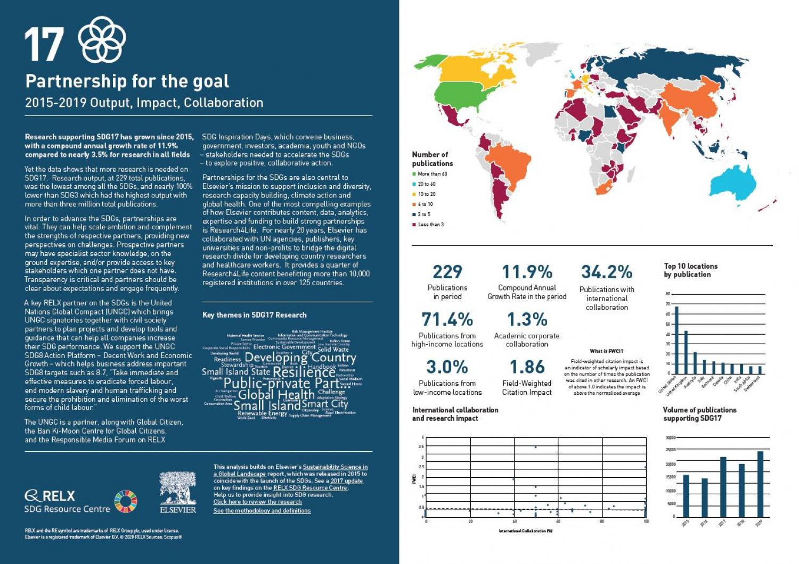
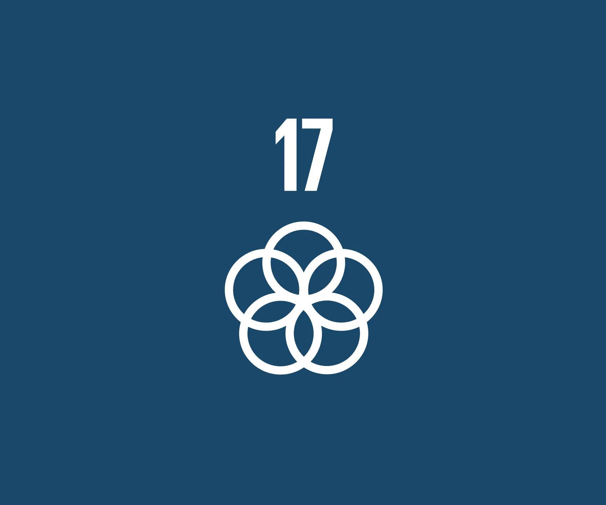

SDG GOAL 17
Revitalize the global partnership for sustainable development
Goal 17 is about revitalizing the global partnership for sustainable development. The 2030 Agenda is universal and calls for action by all countries – developed and developing – to ensure no one is left behind. It requires partnerships between governments, the private sector, and civil society. The Sustainable Development Goals can only be realized with a strong commitment to global partnership and cooperation.
- Strengthen domestic resource mobilization, including through international support to developing countries, to improve domestic capacity for tax and other revenue collection
- Mobilize additional financial resources for developing countries from multiple sources
- Promote the development, transfer, dissemination and diffusion of environmentally sound technologies to developing countries on favourable terms, including on concessional and preferential terms, as mutually agreed
- Enhance policy coherence for sustainable development
- By 2030, build on existing initiatives to develop measurements of progress on sustainable development that complement gross domestic product, and support statistical capacity-building in developing countries
- Respect each country’s policy space and leadership to establish and implement policies for poverty eradication and sustainable development

